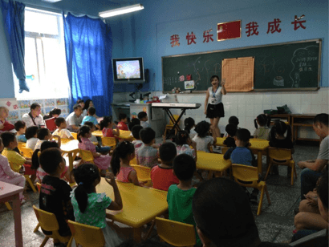

近年来，全国学习围棋的学生越来越多，如北京、上海、南京、浙江每年都有20000多名围棋新学生。同时，重庆一中、三中、八中也特别重视有围棋爱好学生的培养，对有围棋爱好的学生也特别青睐。目前，巴蜀中学开设有围棋特长班，对围棋棋艺优秀的学生优先直接免费录取。北京大学、清华大学、上海复旦大学、上海外语学院、上海财经大学等对围棋业余高段棋手和职业棋手每年都有特招。
可见，围棋已越来越受到欢迎与重视。
近年，弈之道已在重庆市新桥小学、大石坝和济小学、五里店小学、马家堡小学等地开设了围棋特色课。这主要有以下两方面的作用：一方面让更多的孩子了解、认识围棋，感受围棋的乐趣，使孩子对围棋感兴趣；另一方面，弘扬中国传统文化，使这项已经有近五千年历史的娱乐、益智游戏——围棋得到更好的传承！
走进校园，可发现孩子们对围棋的兴趣很高，深受广大选手的喜爱，其表现应验了“磨刀不误砍柴工”，得到了家长和学校领导们的肯定。

五里店小学围棋公开课
导读：每年的招生季，焦虑的家长带着孩子们，抱着各种特长证书在著名学校门前寻找机会，这样的场景已经成为如今中国式升学常见的一幕。挤破了门，打破了头，可能还会被拒绝。东边不亮西边亮，也许您可以到美国试试，只要孩子确实有实力，不怕检验，多年的付出在美国可能会有回报，尤其是棋类项目。可能是窥见中国高智商人群的潜在价值，近年来，美国中学和高校对棋类特长生的招募，日益打开大门。
从美国探访回来的中国职业棋手们发现，美国著名的普林斯顿大学竟然把围棋项目作为大学招生的一个重要参考条件。普林斯顿大学围棋俱乐部历史悠久，特别重视围棋教育，对于能为学校争光，取得美国围棋公开赛好成绩的本校学生，学校更是宠爱有加。已经有五十多年历史的新泽西州围棋公开赛，一般会有百余人参赛，今年获得冠军的是普林斯顿大学毕业生陈兆年，亚军赵仲夏也于2011年年底被学校提前录取。
美国的围棋水平虽然不高，但美国国内的知识分子阶层对围棋项目却是十分热爱，围棋在很多美国高校中还是很有市场的。学校招去的围棋特长生，除了吸引智力精英，还需要给学校打很多比赛，他们希望这些特招的学生，能用好的比赛成绩来回报学校。美国的围棋比赛很多，除了有各州和全国的公开赛，还有自己像模像样的段位赛，能打到业余8段，是十分了不起的了。
除了围棋，国际象棋特长生在美国也深受欢迎，如果能获得州青少年冠军，学习过关，上美国著名高校基本没什么问题。除了普林斯顿大学外，哈佛大学等世界知名高校，也会特别关注学生的围棋和国象成绩，如果孩子学习优异，棋又下得好，哈佛大学会毫不犹豫地下手抢走，提前录取。
据悉，美国的很多常青藤大学在录取学生的时候，成绩与能力是并重的。光是成绩好，他们会觉得是死读书的孩子，尤其对于亚裔子女，如果孩子有特长，会“玩儿”的东西多，录取老师立刻会刮目相看，如果会的又是极具智力含量的棋类项目，加上成绩又好，那在老师心目中的分量立刻会大增。
评判孩子能力，每个学校都会有自己的考察方法，有不同的表格，包括潜能判断，各种学术与非学术的兴趣，特殊技能与天资、经验、抱负和背景等因素都会纳入到考察录取范围。以普林斯顿大学为例，学校评价优秀学生的指标有4项：头脑质量，包括智商、学习能力、创造力等；品格质量，包括责任感、价值观、判断力等；为学校做出贡献的能力；未来在本专业和社区起领导作用的潜力。而家庭经济状况，学校完全不看。
本网站正在建设中, 部分功能未能开放, 感谢您的关注、支持与谅解.
弈之道 围棋道场